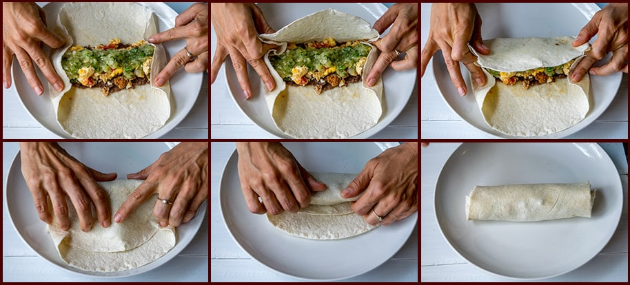

If you love the iconic flavors of a Big Mac but sometimes want something a bit more portable (and let’s face it, less messy), this is about to become your new favorite meal. We are taking everything that makes the classic fast-food burger great and rolling it up into a warm, toasted flour tortilla.
You get the seasoned ground beef, the melted cheese, the crunch of the lettuce and pickles, and most importantly, that legendary special sauce. It’s fresh, it’s incredibly easy to make at home, and it hits the spot every single time.
Why This Recipe Just Works:
Whether you're looking for a fun Friday night dinner or a quick meal prep idea that doesn't taste boring, these burritos are an absolute game-changer.
1. cooking the beef
mix until the garlic gets golden and the onion starts to get transparent
2. make a very fine chopped salad (we recommend american lettuce, tomatoes, onions and a little bit of lemon juice.)
3. prepare the burritos
(note: spread all the ingredients in a horizontal line on the lower part of the burrito)
4. rolling the burritos

5. sealing
now put it on a plate and enjoy!